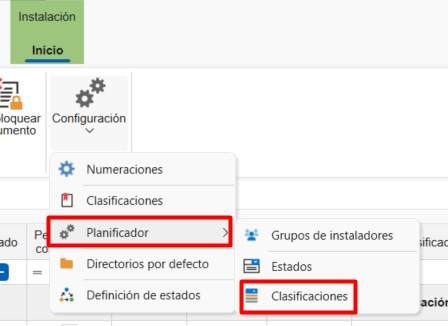
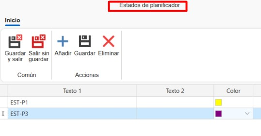
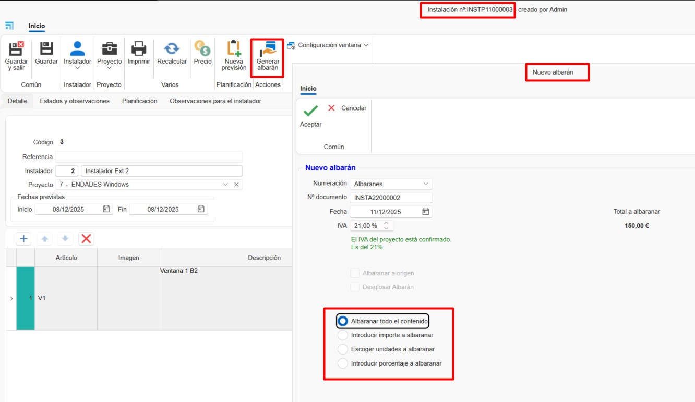
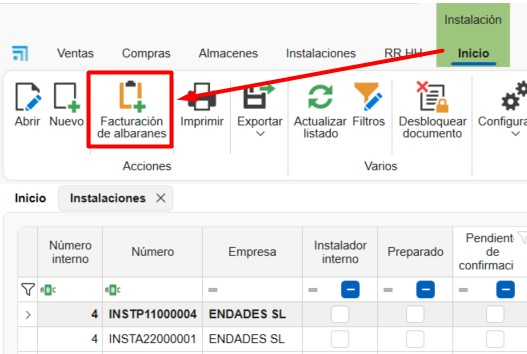

Instalações
1. Introdução
Este manual foi concebido para orientar os utilizadores na criação e planeamento de instalações e montagens a partir do ENBLAU. Desta forma, as instalações planeadas podem ser atribuídas a instaladores internos e externos através da plataforma.
2. Instalações
No módulo Instalações pode aceder a:

2.1. Instalação
2.1.1. Configurações
A partir de Instalação pode aceder a Configurações para definir os parâmetros do sistema.

1. Sequências de Numeração Defina sequências de numeração para cada tipo de documento.

2. Classificações Estabeleça classificações para atribuir aos documentos de instalação.

3. Planeador Defina Classificações e Estados para as tarefas do planeador.




ℹ️ Nota: Estas classificações e estados estarão disponíveis ao criar uma nova tarefa no Planeador de Instalação.
4. Diretórios Predefinidos Configure as pastas que serão geradas automaticamente com cada instalação.


ℹ️ Nota: Os diretórios predefinidos são pastas que são geradas automaticamente com cada nova instalação.
5. Definição de Estados Configure os estados disponíveis para cada tipo de documento.

2.1.2. Criar uma Ordem de Instalação
1. Novo Para criar uma instalação, vá a Instalação → Novo. Será aberta uma janela onde deve preencher os campos obrigatórios: - Tipo de documento - Numeração - Número do documento - Instalador externo - Projeto

2. Ordem de Instalação
Na faixa superior do documento, estão disponíveis algumas funções: - Imprimir → Imprimir relatórios do documento de instalação. - Preços → Editar os preços predefinidos do Instalador Externo. - Nova Previsão → Criar uma previsão de instalação para ser refletida no planeador de instalações.
Separador Detalhes Este separador mostra todos os campos previamente preenchidos (editáveis). Na parte inferior pode adicionar posições definindo: - Nome do artigo - Descrição - Unidades - Preço, etc.

Separador Estados e Observações Este separador configura campos como: - Método de pagamento - Datas de solicitação e cancelamento - IVA, etc.

Separador Planeamento Aqui indica as datas de início e fim para o planeamento e atribui instaladores internos.

Separador Observações para Instalação Espaço para adicionar notas específicas para a instalação.
3. Guia de Instalação
A partir de uma ordem de instalação, pode gerar uma guia de instalação. Especifique a forma de guiar e depois imprima.


4. Faturas de Instaladores Externos
-
A partir da secção Instalação, vá a Faturação de Guias.

-
A partir de Faturação de Guias, indique o instalador externo a quem será emitida a fatura.

-
Aparecerá uma lista das guias a faturar do instalador selecionado. Indique na coluna A Faturar clicando e marcando a caixa para as guias a faturar. Também há opções nos botões da faixa superior para Selecionar Tudo ou Desselecionar Tudo.

-
Antes de gerar a fatura, pode especificar o modo Agrupar conteúdo por guia (selecionado por predefinição) ou Conteúdo Desagregado. Também pode indicar a que projeto emitir a fatura.

-
Uma vez gerada a fatura, pode imprimi-la ou editá-la se necessário.

2.1.4. Criar Instalação a partir de um Documento de Vendas
A partir de um documento de vendas (encomenda, medição ou produção) pode:
- Criar uma previsão de instalação
- Criar uma instalação diretamente

1. Previsão de Instalação
Permite indicar uma previsão configurando:
- Instalador externo
- Data estimada
- Valores acordados

2. Criar Instalação
Ao criar a instalação a partir de um documento de vendas, deve indicar as unidades a instalar de cada posição. Posteriormente, pode adicionar instaladores externos ou internos a essa instalação.

2.1.3. Imprimir Relatórios de Instalação
Permite imprimir os relatórios disponíveis:
- Relatório de Instalação
- Relatórios de Tempos
- Ordem de Instalação
Antes de imprimir, são mostradas as condições e uma breve descrição do relatório selecionado.

2.2. Instaladores Externos
Para registar novos instaladores externos:
- Vá a Instalação → Instaladores Externos → Novo
-
Complete os campos obrigatórios:
- Nome
- Morada
- NIF
- Dados de contacto
-
Preços, etc.

2.3. Planeador de Instalações
A partir de Instalações → Planeador de Instalações pode visualizar e gerir tarefas num calendário para cada instalador (interno ou externo).
A partir da faixa de opções, pode organizar a vista do calendário (dia, semana, mês) e agrupar tarefas por recursos ou datas.

1. Criar Tarefa
Para criar uma nova tarefa:
- Selecione Nova Tarefa
-
Na janela Novo Evento de Instalação, atribua:
- Instalador
- Número de instalação
-
Projeto

-
Na janela Tarefa, detalhe:
- Estados e classificações
- Data e hora de início/fim
- Descrição breve
-
Notas

2. Calendário
As tarefas atribuídas aparecem no calendário. Ao passar o cursor sobre uma tarefa, são mostradas informações básicas:
- Nome do projeto
- Número de instalação
- Descrição breve
As cores indicam o estado e a classificação (definidos anteriormente na configuração). Também pode editar fazendo duplo clique na tarefa.

 Español
Español
 English
English
 Italiano
Italiano
 Português
Português